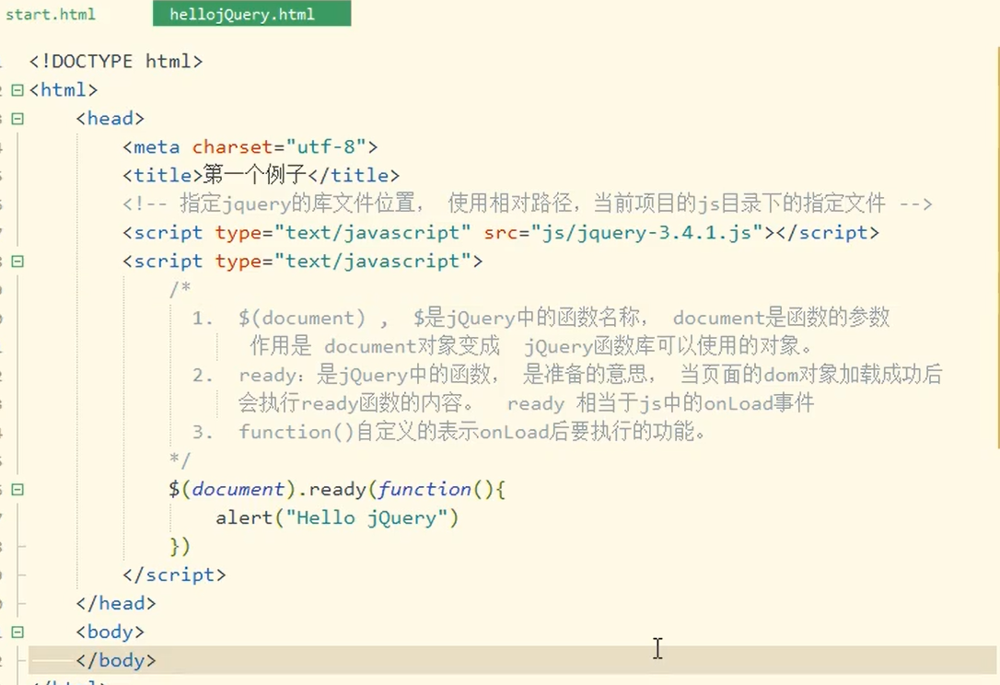

jQuery对JS代码进行封装，简化了JS代码的书写。可以屏蔽浏览器之间的差异性，兼容各大主流浏览器。
DOM：文档对象模型，是W3C组织推荐的处理可拓展标志语言的标准编程接口。
通过DOM对HTML页面的解析，可以将页面元素解析为元素节点，属性节点和文本节点，这些解析出的节点对象，即是DOM对象，DOM对象可以使用JS中的方法。
DOM对象和jQuery对象
dom对象，使用JS的语法创建的对象叫做DOM对象，也就是JS对象
var obj=document.getElementById("txt1");odj是dom对象，也叫作JS对象。
jQuery对象：使用jQuery语法表示的对象叫做jQuery对象，注意：jQuery表示的对象都是数组，jquery操作针对的是数组中的所有dom对象。例如：
var jobj=$("#txt1"),jobj就是使用jQuery语法表示的对象，也就是jQuery对象，它是一个数组。
dom对象可以和jQuery对象相互转换。
dom对象可以转为jquery对象，语法：$(dom对象)
jQuery对象转为dom对象，语法：从数组中获取第一个对象，使用[0]或者get{0}
为什么要进行dom和jQuery的转换？
目的是使用对象的方法，dom对象只能使用dom的属性和方法，jQuery对象只能使用jQuery的属性和方法。
命名jQuery对象时，为了和dom对象进行区分，建议使用$开头。
使用jQuery
1.<script type="text/javascript" src="文件路径"></script>指定jQuery的库文件位置。

将dom对象转换成jQuery对象

使用jQuery的语法获取页面中的dom对象
var obj= $("#id名")[0];从数组中获取下标是0的dom对象。
var obj=$("#id名").get(0);
选择器：一个字符串，用来定位Dom对象。
常用的选择器：
1.ID选择器，语法：$("#dom对象的id值")
2.class选择器，语法：$(".class样式名")
3.标签选择器，语法：$("标签名称")
4.所有选择器 语法：$("*")
5.组合选择器 语法：$(".class,#id,标签名")
表单选择器：
使用<input>标签的type属性，定位dom对象的方式。
语法：$(":type属性值")
例如：$(":text")
过滤器：
在定位了dom对象后，根据一些条件筛选dom对象，过滤器不能单独使用。
1.$("选择器：first")：第一个dom对象
2.$("选择器：last")：最后一个dom对象
3.$("选择器：eq(数组下标)")：获取指定下标的dom对象
4.$("选择器：lt(下标)")：获取小于下标的所有dom对象
5.$("选择器：gt(下标)")：获取大于下标的所有dom对象
jQuery中给dom对象绑定事件
1.$(选择器).事件名称（事件的处理函数）
$(选择器)：定位dom对象，dom对象可以有多个，都绑定事件。
事件名称就是JS事件去掉on的部分。
表单属性过滤器：
根据表单中dom对象的状态情况，定位dom对象。
启用状态 enable，
不可用状态 disabled，
选择状态 checked，例如radio，checkbox
$(":text:enabled")//可用的文本框
$(":text:disabled")//不可用的文本框
$(":checkbox:checked")//复选框已经选中的元素
选择器>option:selected//选择指定下拉列表的被选中元素
JQuery绑定事件方式：
1>$(选择器).事件名称(事件的处理函数)
选择器：定位dom对象，dom对象可以由多个，这些dom对象都会绑定该事件。
事件名称：JS中事件去掉on的部分。例如：js中的单击事件 onclick(),对应JQuery中就是click;
事件的处理函数：就是一个function()，当事件发生时，执行这个函数的内容。
例如：$("#btn").click(function){
alert("btn按钮被单击了");
2>on()绑定事件（可以动态的绑定事件）
为内存中新建的dom对象绑定事件
$(选择器).on(事件名称,事件的处理函数)
事件名称：就是Js事件去掉on的部分；
事件处理函数：function 定义；
例如：<input type="button" id="btn">
$("#btn").on("click",function(){处理单击按钮 })

函数：
第一组：
1、val

2、text


3、attr

第二组：
1、remove

2、empty

3、append


4、html


5、each


循环普通数组：

循环JSON

循环DOM数组（语法1）

循环JQuery对象（JQuery对象就是dom数组）

Ajax